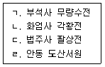
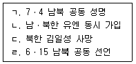
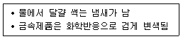
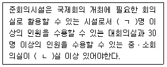

국내여행안내사-1차 (2014-11-01 기출문제)
1과목: 한국사
1. 고인돌에 관한 설명으로 옳은 것은?
- 강화, 고창, 화순 등 특정지역에만 분포한다.
- 석재 가공기술과 경제력이 확보된 철기시대에 조성되었다.
- 돌널무덤과 같은 시대에 조성된 무덤이다.
- 큰 덮개돌을 낮은 굄돌로 괸 바둑판 형태가 전형적인 모습이다.
(정답률: 71%)

2. 고분 종류와 유적 명칭의 연결이 옳지 않은 것은?
- 돌널무덤 - 장군총
- 벽돌무덤 - 무령왕릉
- 돌무지덧널무덤 - 천마총
- 굴식 돌방무덤 - 정혜공주묘
(정답률: 78%)
3. 다음 설명 중 옳지 않은 것은? (문제 오류로 실제 시험에서는 1, 2번이 정답처리 되었습니다. 여기서는 1번을 누르면 정답 처리 됩니다.)
- 발해 문왕은 ‘인안’ 연호를 사용하였다.
- 신라 진흥왕은 ‘건원’ 연호를 사용하였다.
- 통일 신라의 군사 조직은 9서당 10정이다.
- 발해의 지방 행정 조직은 5경 15부 62주이다.
(정답률: 80%)
4. 책 이름과 주요 여행국이 바르게 연결된 것은?
- 왕오천축국전 - 중국
- 서유견문 - 인도
- 열하일기 - 베트남
- 해동제국기 - 일본
(정답률: 79%)
5. 고려시대의 대장경에 관한 설명으로 옳지 않은 것은?
- 대장경은 주로 경ㆍ율ㆍ논으로 구성되어 있다.
- 의천은 두 차례의 대장경 제작을 주관하였다.
- 초조대장경은 부인사에, 재조대장경은 해인사에 보관하였다.
- 부처의 힘을 빌려 거란과 몽골의 침략을 물리치기 위하여 간행하였다.
(정답률: 88%)
6. 고려시대의 석조물이 아닌 것은?
- 고달사지 승탑(부도)
- 월정사 8각 9층 석탑
- 경천사 10층 석탑
- 쌍봉사 철감선사 승탑(부도)
(정답률: 81%)
7. 고려 말의 왜구에 관한 설명으로 옳지 않은 것은?
- 최무선은 화포를 이용하여 진포에서 왜구를 크게 무찔렀다.
- 왜구는 주로 쓰시마 섬 및 규슈 서북부 지역에 근거를 두었다.
- 왜구의 침입은 해안을 중심으로 이루어져서 고려에 큰 피해를 주지 않았다.
- 이성계는 남원 운봉지역에서 왜구를 격퇴하여 백성들의 신망을 얻었다.
(정답률: 90%)
8. 다음 설명 중 옳은 것은?
- 동국여지승람은 군현의 연혁, 인물, 지세등을 기록한 지리지이다.
- 동국통감은 고조선부터 조선까지의 역사를 정리한 역사서이다.
- 정종 때에 편찬된 혼일강리역대국도지도는 세계 최초의 세계 지도이다.
- 조선왕조실록은 세종 때부터 편찬되었다.
(정답률: 77%)
9. 도자기에 관한 설명으로 옳지 않은 것은?
- 고려 청자는 11세기 경에 발달하였으며, 독특한 비취색을 띠었다.
- 상감청자의 기법은 나전칠기나 은입사 공예의 기법을 응용한 것이다.
- 조선의 백자는 청자보다 깨끗하고 담백하여 선비의 취향에 잘 맞았다.
- 백자를 대량으로 생산하기 위하여 분청사기를 만들기 시작하였다.
(정답률: 92%)
10. 임진왜란 시의 전투와 이를 이끈 인물의 연결이 옳지 않은 것은?
- 행주 대첩 - 권율
- 충주 전투 - 신립
- 진주 혈전 - 정문부
- 한산도 대첩 - 이순신
(정답률: 92%)
11. 17~18세기의 문화재로 옳은 것을 모두 고른 것은?

- ㄱ, ㄹ
- ㄴ, ㄷ
- ㄴ, ㄷ, ㄹ
- ㄱ, ㄴ, ㄷ, ㄹ
(정답률: 56%)
12. 저자와 저서의 연결이 옳은 것은?
- 이종휘 - 발해고
- 신채호 - 조선사연구초
- 이규경 - 청장관전서
- 정인보 - 한국독립운동지혈사
(정답률: 75%)
13. 태양력 사용 및 단발령 발표와 관련된 것은?
- 광무개혁
- 갑오개혁
- 을미개혁
- 폐정개혁안
(정답률: 82%)
14. 독도를 일본의 영토로 강제 병합한 시기에 발생한 사건은?
- 러ㆍ일 전쟁
- 청ㆍ일 전쟁
- 동학 농민 운동
- 한ㆍ일 병합 조약
(정답률: 97%)
15. 다음 사건을 발생 시기 순으로 올바르게 나열한 것은?

- ㄱ - ㄴ - ㄷ - ㄹ
- ㄱ - ㄷ - ㄴ - ㄹ
- ㄴ - ㄱ - ㄷ - ㄹ
- ㄴ - ㄷ - ㄱ - ㄹ
(정답률: 68%)
2과목: 관광자원해설
16. 한국의 유네스코 유산 중 ‘세계문화유산’으로 등재된 것이 아닌 것은?
- 경주역사유적지구
- 석굴암ㆍ불국사
- 남한산성
- 해인사 대장경판 및 제경판
(정답률: 64%)
17. 2013년도에 도립공원에서 국립공원으로 승격된 것은?
- 태백산
- 무등산
- 마이산
- 대둔산
(정답률: 77%)
18. 동굴관광자원에 관한 설명으로 옳지 않은 것은?
- 화산동굴은 ‘용암굴’이라고도 하며, 화산 활동 때 용암이 흘러내리면서 형성된 동굴이다.
- 대체로 동굴 속은 여름에 16℃, 겨울에 14℃ 내외의 일정한 기온과 70~90%의 일정한 습도를 이룬다.
- 화산동굴은 화산활동에 의하여 형성된 동굴로 용암동굴, 화도동굴 등으로 구분된다.
- 용암동굴은 지하로 스며드는 빗물이나 지하수의 용식작용으로 생긴 다양한 형태의 동굴이다.
(정답률: 85%)
19. 한강유역에 속하지 않는 댐은?
- 대청댐
- 춘천댐
- 팔당댐
- 청평댐
(정답률: 91%)
20. 다음 특성을 지닌 온천은?

- 산성천
- 식염천
- 유황천
- 라듐천
(정답률: 98%)
21. 국보가 아닌 것은?
- 안동 하회탈 및 병산탈
- 옛 보신각 동종
- 영주 부석사 무량수전
- 경주 첨성대
(정답률: 78%)
22. 문화관광자원 중 중요민속문화재에 해당 되는 것은?
- 제주칠머리당영등굿
- 덕온공주 당의
- 북청사자놀음
- 기지시줄다리기
(정답률: 71%)
23. 전북 남원에서 개최되는 지역 민속축제는?
- 춘향제
- 영등제
- 백제문화제
- 개천예술제
(정답률: 95%)
24. 유교관련 관광자원이 아닌 것은?
- 소수서원
- 전주향교
- 원구단
- 새남터
(정답률: 72%)
25. 산업관광자원이 아닌 것은?
- 금산인삼
- 광양제철
- 경산민속놀이
- 동대문시장
(정답률: 94%)
3과목: 관광법규
26. 관광기본법령상 관광진흥에 관한 시책과 동향에 대한 보고서에 관한 설명으로 옳은 것은?
- 정부가 매년 정기국회 시작 전까지 국회에 제출하여야 한다.
- 한국관광협회중앙회가 매년 정기국회 시작전까지 국회에 제출하여야 한다.
- 정부가 매년 12월 31일까지 국회에 제출하여야 한다.
- 한국관광협회중앙회가 매년 12월 31일까지 국회에 제출하여야 한다.
(정답률: 80%)
27. 국제회의산업 육성에 관한 법령상 국제회의 도시를 지정할 수 있는 자는?
- 지방자치단체장
- 한국관광협회중앙회장
- 문화체육관광부장관
- 한국관광공사 사장
(정답률: 83%)
28. 국제회의산업 육성에 관한 법령상 국제회의 시설 중 준회의시설에 관한 설명이다. 다음 ( )에 들어갈 내용으로 옳게 짝지어진 것은?

- ㄱ: 100, ㄴ: 1
- ㄱ: 100, ㄴ: 2
- ㄱ: 200, ㄴ: 1
- ㄱ: 200, ㄴ: 3
(정답률: 83%)
29. 관광진흥법령상 유원시설업의 시설 및 설비기준 중 종합유원시설업은 안전성검사 대상 유기시설 또는 유기기구를 몇 종류이상 설치하여야 하는가?
- 1종
- 3종
- 5종
- 6종
(정답률: 71%)
30. 관광진흥법령상 우수숙박시설로 지정된 숙박시설에 대하여 문화체육관광부장관이나 지방자치단체의 장이 할 수 있는 지원이 아닌 것은?
- 관광진흥개발기금법에 따른 관광진흥개발기금의 대여
- 국내 또는 국외에서의 홍보
- 관광숙박업으로의 등록 지원
- 숙박시설의 운영 및 개선을 위하여 필요한 사항
(정답률: 65%)
31. 관광진흥법령상 여행업의 관광사업자 등록대장에 기재되어야 할 사항이 아닌 것은?
- 등급
- 자본금
- 관광사업자의 상호 또는 명칭
- 대표자의 성명∙주소 및 사업장의 소재지
(정답률: 49%)
32. 관광진흥법령상 자연적 또는 문화적 관광자원을 갖추고 관광객을 위한 기본적인 편의시설을 설치하는 지역으로서 지정된 곳은?
- 관광특구
- 관광지
- 관광단지
- 주제공원
(정답률: 71%)
33. 관광진흥법령상 호텔업의 종류가 아닌 것은?
- 한국전통호텔업
- 호스텔업
- 크루즈업
- 가족호텔업
(정답률: 91%)
34. 관광진흥법령상 관광개발기본계획과 권역별 관광개발계획은 몇 년 마다 수립하여야하는가?
- 관광개발기본계획: 5년, 권역별 관광개발 계획: 2년
- 관광개발기본계획: 7년, 권역별 관광개발 계획: 5년
- 관광개발기본계획: 10년, 권역별 관광개발 계획: 5년
- 관광개발기본계획: 10년, 권역별 관광개발 계획: 7년
(정답률: 55%)
35. 관광진흥법령상 관광특구 지정을 위해 해당 지역이 갖추어야 하는 요건 중 서울특별시를 제외한 지역에서의 최근 1년간 외국인 관광객 수의 기준은?
- 5만 명 이상
- 10만 명 이상
- 20만 명 이상
- 50만 명 이상
(정답률: 82%)
4과목: 관광학개론
36. 여행업의 주요 업무가 아닌 것은?
- 숙박 및 교통편 수배 업무
- 여행상품 기획 및 판매 업무
- 전자여권 발급 대행 업무
- 고객상담 업무
(정답률: 95%)
37. 국외여행업은 누구를 대상으로 하는가?
- 국내를 여행하는 외국인
- 국외를 여행하는 내국인
- 국외를 여행하는 외국인
- 국외를 여행하는 내ㆍ외국인
(정답률: 85%)
38. 여행증명서에 관한 내용으로 옳지 않은 것은?
- 6개월 이내의 유효기간
- 출국하는 무국적자에게 발행
- 해외입양자에게 발행
- 여권을 분실한 국외여행자로 여권 발급을 기다릴 시간적 여유 없이 긴급히 귀국해야 할 필요가 있는 자에게 발행
(정답률: 60%)
39. 레지덴셜 호텔(Residential Hotel)의 설명으로 옳은 것은?
- 장기체류 호텔
- 단기체류 호텔
- 국제회의 호텔
- 공항 호텔
(정답률: 80%)
40. 숙박업의 사업적 특성으로 옳지 않은 것은?
- 24시간 운영
- 높은 초기투자 비율
- 객실상품의 비저장성
- 고정비의 비중이 작음
(정답률: 86%)
41. 다음 중 수도권에 소재하는 국제회의시설은?
- EXCO
- KINTEX
- BEXCO
- ICC
(정답률: 91%)
42. 우리나라에서 카지노업이 허가될 수 있는 곳은?
- 관광특구 내 최상등급의 호텔업 시설
- 1만톤급 이상 국내 여객선
- 대규모 유원시설
- 대규모 관광공연장
(정답률: 87%)
43. 17~18세기 유럽 귀족층 자녀의 인격함양을 목적으로 하는 여행은?
- Mass Tour
- Grand Tour
- Medical Tour
- New Tour
(정답률: 92%)
44. 국제공항의 C.I.Q 업무에 해당하지 않는 것은?
- 관광 업무
- 출입국 수속 업무
- 검역 업무
- 세관 업무
(정답률: 58%)
45. 경제적 측면에서 관광의 긍정적인 효과가 아닌 것은?
- 조세 수입 증가
- 고용 증가
- 지역경제 진흥
- 외화 유출 증가
(정답률: 89%)
46. 외국인 관광객 유치를 위한 노력이 아닌 것은?
- 한국방문의 해 사업
- 관광특구 조성
- 비자발급정책 강화
- 국제관광 협력 증진
(정답률: 91%)
47. 국민관광 진흥을 위한 노력이 아닌 것은?
- 복지관광 지원
- 노동시간 확대
- 관광인력 양성
- 국내관광 수용태세 개선
(정답률: 95%)
48. 우리나라 국민에 대한 해외여행의 연령제한이 전면적으로 폐지된 해는?
- 1986년
- 1988년
- 1989년
- 2002년
(정답률: 83%)
49. 관광상품의 소멸성적 특성을 극복하기 위한 방안으로 옳지 않은 것은?
- 서비스 가격의 차별화
- 비수기 수요 개발
- 예약 시스템 도입
- 고(高)가격 정책의 유지
(정답률: 95%)
50. 전통적인 관광마케팅 믹스 4P로 올바르지 않은 것은?
- Product
- Price
- Place
- Package
(정답률: 67%)